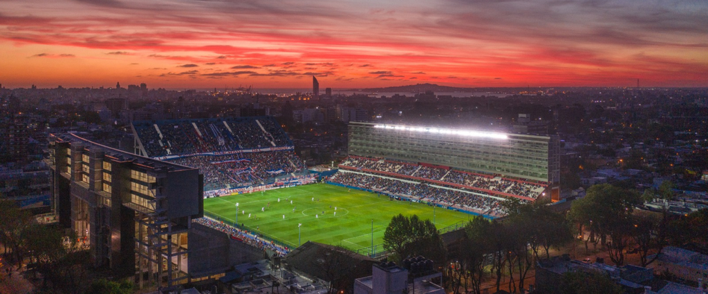

|

|
El Estadio Gran Parque Central tiene una historia rica y emblemática, siendo inaugurado el 17 de diciembre de 1900, lo que lo convierte en uno de los estadios más antiguos de América del Sur. Fue construido como la casa del Club Atlético Nacional, uno de los equipos más grandes y populares de Uruguay. A lo largo de los años, el estadio ha sido testigo de momentos claves en la historia del fútbol uruguayo, incluyendo partidos decisivos de la Copa Libertadores, la Copa Intercontinental y encuentros de la selección nacional. Su construcción marcó el inicio de una nueva era para el club, que hasta entonces jugaba en diversos campos temporales. Durante el siglo XX, el Gran Parque Central se consolidó como un símbolo de la identidad de Nacional, siendo el escenario de las históricas rivalidades con otros equipos, especialmente el Club Atlético Peñarol, en el clásico del fútbol uruguayo. Además, el estadio ha sido renovado y ampliado en varias ocasiones, lo que le ha permitido mantenerse a la vanguardia y seguir siendo uno de los estadios más relevantes de la región. Su historia, cargada de victorias, derrotas y grandes emociones, sigue viva en cada rincón del estadio. |